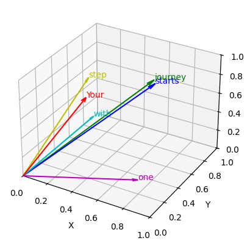

在之前的两节内容中，我们已经将输入的句子通过tokenizer映射到了一个个的token ID，并进一步做了连续编码，得到了包含充分语义信息的embedding向量。
现在，让我们继续探索接下来的数据流向。
GPT模型的架构是一个类似Transformer解码器架构的网络，因此本文将从Transformer的核心组件“注意力机制”开始讲起。
一、 直观理解注意力 这里通过一个例子展示来直观展现什么是注意力：使用前两节所讲的内容，假设已经将”Your journey starts with one step”这句话编码到embedding空间，embedding维度是3，如下：
1 2 3 4 5 6 7 8 inputs = torch.tensor( [[0.43 , 0.15 , 0.89 ], [0.55 , 0.87 , 0.66 ], [0.57 , 0.85 , 0.64 ], [0.22 , 0.58 , 0.33 ], [0.77 , 0.25 , 0.10 ], [0.05 , 0.80 , 0.55 ]] )
每个token的embedding维度都是3，因此让我们在三维空间对这些token进行可视化：
1 2 3 4 5 6 7 8 9 10 11 12 13 14 15 16 17 18 19 fig = plt.figure() ax = fig.add_subplot(111 , projection='3d' ) colors = ['r' , 'g' , 'b' , 'c' , 'm' , 'y' ] for (x, y, z, word, color) in zip (x_coords, y_coords, z_coords, words, colors): ax.quiver(0 , 0 , 0 , x, y, z, color=color, arrow_length_ratio=0.05 ) ax.text(x, y, z, word, fontsize=10 , color=color) ax.set_xlabel('X' ) ax.set_ylabel('Y' ) ax.set_zlabel('Z' ) ax.set_xlim([0 , 1 ]) ax.set_ylim([0 , 1 ]) ax.set_zlim([0 , 1 ]) plt.show()

我用不同颜色绘制了每个token在三维空间中的向量表示，根据几何知识可以知道，两个空间夹角越小的向量，相似度越高，这其实是一种余弦相似度的应用。
在深度学习中，经常用余弦相似度来表征两个特征向量的相似程度，这里的相似度其实就是attention的一种体现，在计算向量A和向量B的attention score时，实际上就是计算两者的相似度。
举个例子，现在来计算第二个token journey与其他token之间的相似度：
1 2 3 4 5 query = inputs[1 ] attn_scores_2 = torch.empty(inputs.shape[0 ]) for i, x_i in enumerate (inputs): attn_scores_2[i] = torch.dot(x_i, query)
计算得到的attn_scores如下：
1 tensor([0.9544, 1.4950, 1.4754, 0.8434, 0.7070, 1.0865])
根据计算结果可知，’journey’除了与自身相似度最高以外，与’starts’的相似度最高(1.4754)，与’one’的相似度最低(0.7074)，这个结果与上面可视化的结果是一致的。
Transformer中的注意力，本质上就是使用点积操作来计算两个向量的相似度（另外还有缩放操作，该操作将在本文后面的篇幅介绍），因此也被称为缩放点积注意力(Scaled Dot-Product Attention).
上面的例子只计算了’journey’与所有token的余弦相似度，现在来计算整个token的相似度矩阵：
1 2 attn_scores = inputs @ inputs.T print (attn_scores)
输出：
1 2 3 4 5 6 tensor([[0.9995, 0.9544, 0.9422, 0.4753, 0.4576, 0.6310], [0.9544, 1.4950, 1.4754, 0.8434, 0.7070, 1.0865], [0.9422, 1.4754, 1.4570, 0.8296, 0.7154, 1.0605], [0.4753, 0.8434, 0.8296, 0.4937, 0.3474, 0.6565], [0.4576, 0.7070, 0.7154, 0.3474, 0.6654, 0.2935], [0.6310, 1.0865, 1.0605, 0.6565, 0.2935, 0.9450]])
这是一个对称的相似度矩阵。
经过上面的例子，已经直观感受了所谓注意力本质上是两个特征向量的点积。
在做完点积后，需要执行‘缩放’操作（该操作将在本文后面的篇幅介绍），然后对缩放后的相似度矩阵使用softmax映射到0-1之间的概率分布（以及将注意力矩阵除以）。这样，某个token对于其他token的相似度之和就变成了1。
实现时，直接将上面计算得到的相似度矩阵用softmax在行维度上进行映射即可：
1 2 attn_weights = torch.softmax(attn_scores, dim=-1 ) print (attn_weights)
1 2 3 4 5 6 7 tensor([[0.1792, 0.1713, 0.1692, 0.1061, 0.1042, 0.1240, 0.1459], [0.1180, 0.2026, 0.1986, 0.1056, 0.0921, 0.1346, 0.1486], [0.1184, 0.2017, 0.1981, 0.1058, 0.0943, 0.1332, 0.1485], [0.1223, 0.1768, 0.1744, 0.1246, 0.1077, 0.1467, 0.1476], [0.1305, 0.1675, 0.1689, 0.1169, 0.1607, 0.1108, 0.1446], [0.1180, 0.1861, 0.1813, 0.1211, 0.0842, 0.1615, 0.1478], [0.1277, 0.1889, 0.1860, 0.1121, 0.1011, 0.1359, 0.1483]])
注意此时的相似度矩阵已经做了softmax归一化，不再是对称矩阵，相应地，我们现在可以将上述的attn_weights称之为注意力矩阵了。
这其实是一种权重，拿注意力矩阵的第二行为例：
1 2 3 4 5 6 # 原始句子：Your journey starts one step 第二行的第一个数字0.1180代表'journey'对'Your'的注意力权重 第二个数字0.2026代表'journey'对'journey'的注意力权重 第三个数字0.1986代表'journey'对'starts'的注意力权重 ...
有了inputs的注意力权重，就知道了其中每个token对于所有token的关注度（关注度就是这里注意力权重），那么只需要做一个加权，就可以得到新的token表示，这个新的token表示就是经过注意力层进行特征提取得到的。
1 2 all_context_vecs = attn_weights @ inputs print (all_context_vecs)
输出：
1 2 3 4 5 6 7 tensor([[0.4420, 0.6016, 0.5774], [0.4419, 0.6515, 0.5683], [0.4429, 0.6499, 0.5673], [0.4321, 0.6330, 0.5536], [0.4635, 0.5997, 0.5326], [0.4213, 0.6505, 0.5651], [0.4397, 0.6372, 0.5635]])
至此，我们已经了解了attention的本质就是加权。接下来，我们将动手实现它，一些上述没有涉及到的细节也将一并展示。
在此之前，还有一些概念需要阐明。
二、注意力vs自注意力 注意力机制本质上是对输入的不同部分进行加权平均，计算每个输入元素对于其他元素的相关性。这个机制允许模型在处理某个输入时，动态地关注输入的不同部分，从而加强与当前任务相关的信息。
一般来说，注意力机制通过计算查询（Query）和键（Key）之间的相似度来确定关注的程度。然后根据这些关注度加权值（Value）来生成新的表示。
自注意力是注意力机制的一种特殊情况，其中查询、键和值都来自同一个输入。也就是说，在自注意力机制中，模型对同一个输入序列中的每个元素进行加权，以捕捉元素之间的关系和依赖关系。
与注意力机制类似，自注意力同样通过计算查询和键之间的相似度来决定如何加权求和值。不过在自注意力中，查询、键和值都是从同一个输入序列中获取的。这种机制特别适用于处理序列中各元素之间的长期依赖关系。
三、手写注意力机制 在我们上述例子中，所介绍的注意力实际上是一种自注意力，其代码实现如下：
1 2 3 4 5 6 7 8 9 10 11 12 13 14 15 16 17 18 class SelfAttention (nn.Module ): def __init__ (self, d_in, d_out, qkv_bias=False ): super ().__init__() self.W_query = nn.Linear(d_in, d_out, bias=qkv_bias) self.W_key = nn.Linear(d_in, d_out, bias=qkv_bias) self.W_value = nn.Linear(d_in, d_out, bias=qkv_bias) def forward (self, x ): keys = self.W_key(x) queries = self.W_query(x) values = self.W_value(x) attn_scores = queries @ keys.T attn_weights = torch.softmax(attn_scores / keys.shape[-1 ]**0.5 , dim=-1 ) context_vec = attn_weights @ values return context_vec
两个上面没有介绍的关键点：
输入x首先经过一层特征映射，得到q，k和v
在计算注意力权重后，需要进行缩放操作，也就是除以根号下$d_k$
上述代码的数学公式如下：
计算注意力分数 ：
缩放 ：
Softmax ：
加权求和 ：
四、为什么注意力权重要做缩放？ 在计算注意力分数时，Q 和 K 都是高维向量，其点积计算结果可能会很大。
如果不缩放，点积的结果会随着维度的增加而增大，使得 softmax 的输出会变得非常尖锐（即极少数位置的注意力权重大），从而会让模型学习不稳定。
通过缩放，使得数值保持在合理的范围内，有助于保持模型训练过程中的稳定性。
五、因果注意力(Causal Attention) 因果注意力（Causal Attention）是指在自注意力机制中对未来的信息进行屏蔽的操作，确保每个时间步的输出只依赖于当前及之前的输入，而不会泄漏未来的信息。通常，因果注意力用于自回归模型中，比如语言模型（如 GPT），在这种模型中，每个 token 只能依赖于它之前的 token，而不能依赖于后续的 token。
回顾一下之前举的一个例子：
假设完整的句子经过BPE得到的token序列为[a,b,c,d,e]，滑动窗口的大小为4，那么一个配对样本的格式为：
1 2 输入序列X:a,b,c,d 输出序列Y:b,c,d,e
其中，要预测的目标Y是使用滑动窗口将X向右偏移一位得到的。
注意，上述例子中，实际上包含了4个预测过程：
1 2 3 4 5 6 7 8 第一个预测过程： 输入a，预测b 第二个预测过程： 输出a，b，预测c 第三个预测过程： 输出a，b，c，预测d 第四个预测过程： 输出a，b，c，d，预测e
看，这一个(X,Y)数据对，包含了4个预测过程。拿第一个预测过程来说，输入的是a，要预测的是b，但是对X计算得到的注意力权重是4x4的，包含了每一个token对于全部token的注意力分数，因此在使用a预测b时，模型就已经知道了要预测的是b，直接拿过来作为预测结果就好了。这个过程实际上已经发生了数据泄漏，因为模型看到了待预测的未来信息b。
因果注意力就是用来解决这一问题的，它在缩放点积注意力的基础上，对注意力权重的“未来信息”进行了屏蔽 。
因果注意力的代码实现如下：
1 2 3 4 5 6 7 8 9 10 11 12 13 14 15 16 17 18 19 20 21 22 23 24 25 26 27 28 class CausalAttention (nn.Module ): def __init__ (self, d_in, d_out, context_length, dropout, qkv_bias=False ): super ().__init__() self.d_out = d_out self.W_query = nn.Linear(d_in, d_out, bias=qkv_bias) self.W_key = nn.Linear(d_in, d_out, bias=qkv_bias) self.W_value = nn.Linear(d_in, d_out, bias=qkv_bias) self.dropout = nn.Dropout(dropout) self.register_buffer('mask' , torch.triu(torch.ones(context_length, context_length), diagonal=1 )) def forward (self, x ): b, num_tokens, d_in = x.shape keys = self.W_key(x) queries = self.W_query(x) values = self.W_value(x) attn_scores = queries @ keys.transpose(1 , 2 ) attn_scores.masked_fill_( self.mask.bool ()[:num_tokens, :num_tokens], -torch.inf) attn_weights = torch.softmax( attn_scores / keys.shape[-1 ]**0.5 , dim=-1 ) attn_weights = self.dropout(attn_weights) context_vec = attn_weights @ values return context_vec
核心修改点就是这两行代码：
1 2 3 self.register_buffer('mask' , torch.triu(torch.ones(context_length, context_length), diagonal=1 ) attn_scores.masked_fill_(self.mask.bool ()[:num_tokens, :num_tokens], -torch.inf)
第一行实际上创建了一个类变量self.mask，它的值是一个上三角矩阵，假设上下文滑动窗口上4，那么这个`self.mask长这个样子：
1 2 3 4 tensor([[0., 1., 1., 1.], [0., 0., 1., 1.], [0., 0., 0., 1.], [0., 0., 0., 0.]])
接下来，self.mask.bool()会将其转换为布尔类型：
1 2 3 4 tensor([[False, True, True, True], [False, False, True, True], [False, False, False, True], [False, False, False, False]])
[:num_tokens, :num_tokens]的作用是为了使得那些一个batch中token数量少于上下文长度的句子也能够正常使用mask。
masked_fill_操作将attn_scores中对应True位置的值替换为-torch.inf，表示这些位置的注意力得分是无效的，因为它们对应未来的token。这样就保证了因果性，模型无法“看到”未来的token。
最终的注意力权重是一个上三角全部为负无穷-inf的值，比如：
1 2 3 4 tensor([[ 0.35, -inf, -inf, -inf], [-0.75, 1.21, -inf, -inf], [ 0.88, -1.02, 0.54, -inf], [-0.23, 0.67, -0.44, 0.91]])
为什么变成-inf就不会看到未来信息了呢？
这是因为接下来softmax函数会对所有的注意力得分进行归一化，使得这些得分转化为概率值。如果某些得分非常小或者为负无穷-inf，经过softmax计算后，它们会变成0，从而在最终的加权求和过程中，这些位置的注意力权重为0，意味着这些token的贡献被“屏蔽”了，模型就无法访问未来的token信息。
最后，对因果注意力做一个实例化测试：
1 2 3 4 5 6 7 batch = torch.stack((inputs, inputs), dim=0 ) print (batch.shape)context_length = batch.shape[1 ] d_in, d_out = batch.shape[-1 ], 1024 ca = CausalAttention(d_in, d_out, context_length, 0.0 ) context_vecs = ca(batch) print ("context_vecs.shape:" , context_vecs.shape)
这样，就将输入token从embedding的三维空间映射到了1024维空间中，也就完成了特征提取（这里走的是注意力层，因此也可以称作注意力的交互）。
经过注意力的交互，模型可以从输入的token序列中捕获到每个token与其他token之间的关系，模型能够更好的表示复杂的模式和关系，增强了特征的表达能力，这也是注意力机制的意义所在。
六、多头注意力 多头注意力是对单头注意力（也就是本文上面介绍的注意力）的一种扩展。它的核心思想是：通过多个独立的注意力头，从不同的子空间提取信息，使模型能够学习到更多样化的特征。
在实现上，多头注意力只是将单头注意力的输出维度d_out拆分成num_heads份，每一份都由一个单注意力头负责，输出子维度的大小是d_out//num_heads。最后将num_heads个单注意力头的输出进行拼接转换，得到d_out维度的特征。
现在来实现一个使用因果注意力的多头注意力类：
1 2 3 4 5 6 7 8 9 10 11 12 13 14 15 16 17 18 19 20 21 22 23 24 25 26 27 28 29 30 31 32 33 34 35 36 37 38 39 40 41 42 43 44 45 46 47 48 49 50 51 52 53 54 55 56 57 58 59 60 61 class MultiHeadAttention (nn.Module ): def __init__ (self, d_in, d_out, context_length, dropout, num_heads, qkv_bias=False ): super ().__init__() assert (d_out % num_heads == 0 ), "d_out must be divisible by num_heads" self.d_out = d_out self.num_heads = num_heads self.head_dim = d_out // num_heads self.W_query = nn.Linear(d_in, d_out, bias=qkv_bias) self.W_key = nn.Linear(d_in, d_out, bias=qkv_bias) self.W_value = nn.Linear(d_in, d_out, bias=qkv_bias) self.out_proj = nn.Linear(d_out, d_out) self.dropout = nn.Dropout(dropout) self.register_buffer( "mask" , torch.triu(torch.ones(context_length, context_length), diagonal=1 ) ) def forward (self, x ): b, num_tokens, d_in = x.shape keys = self.W_key(x) queries = self.W_query(x) values = self.W_value(x) keys = keys.view(b, num_tokens, self.num_heads, self.head_dim) values = values.view(b, num_tokens, self.num_heads, self.head_dim) queries = queries.view(b, num_tokens, self.num_heads, self.head_dim) keys = keys.transpose(1 , 2 ) queries = queries.transpose(1 , 2 ) values = values.transpose(1 , 2 ) attn_scores = queries @ keys.transpose(2 , 3 ) mask_bool = self.mask.bool ()[:num_tokens, :num_tokens] attn_scores.masked_fill_(mask_bool, -torch.inf) attn_weights = torch.softmax(attn_scores / keys.shape[-1 ]**0.5 , dim=-1 ) attn_weights = self.dropout(attn_weights) context_vec = (attn_weights @ values).transpose(1 , 2 ) context_vec = context_vec.contiguous().view(b, num_tokens, self.d_out) context_vec = self.out_proj(context_vec) return context_vec
实例化测试一下：
1 2 3 4 5 6 7 8 9 10 11 12 13 batch_size = 2 seq_len = 5 d_in = 16 d_out = 32 num_heads = 4 dropout = 0.1 mha = MultiHeadAttention(d_in, d_out, seq_len, dropout, num_heads) x = torch.rand(batch_size, seq_len, d_in) output = mha(x) print ("输入形状:" , x.shape) print ("输出形状:" , output.shape)
至此，我们已经介绍完了Transformer的核心组件：“注意力机制”，并且由单头注意力扩展到了多头注意力。
在下一篇文章中，我们将使用本节构建的多头注意力着手搭建Transformer，欢迎持续关注。